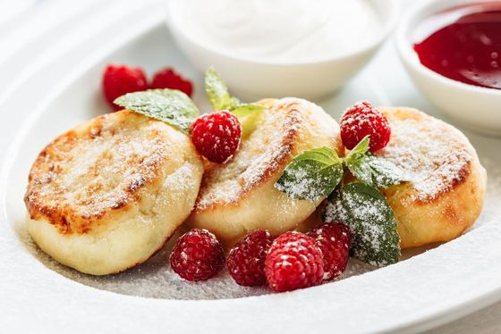

У меня в семье сырники считаются особым ритуалом. Мама их готовит обычно в воскресенье. Мы всегда помогаем
маме на кухне. Завариваем вкусный чай, достаем красивые тарелки, сервируем стол. На фоне у нас обычно играет
расслабляющая музыка.

После того, как мама приготовила сырники, мы всех зовем за наш большой стол. К сырникам подаем сметану,
варенье, мед. Кушаем и разговариваем просто обо всем. Очень люблю такие моменты...
Для этого момента я даже нашла небольшую подборку музыки.
Приятного прослушивания!
Рецепт сырников до ужаса простой!
Приятного аппетита!